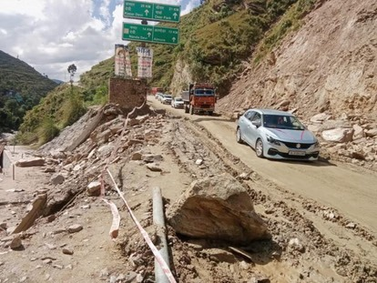
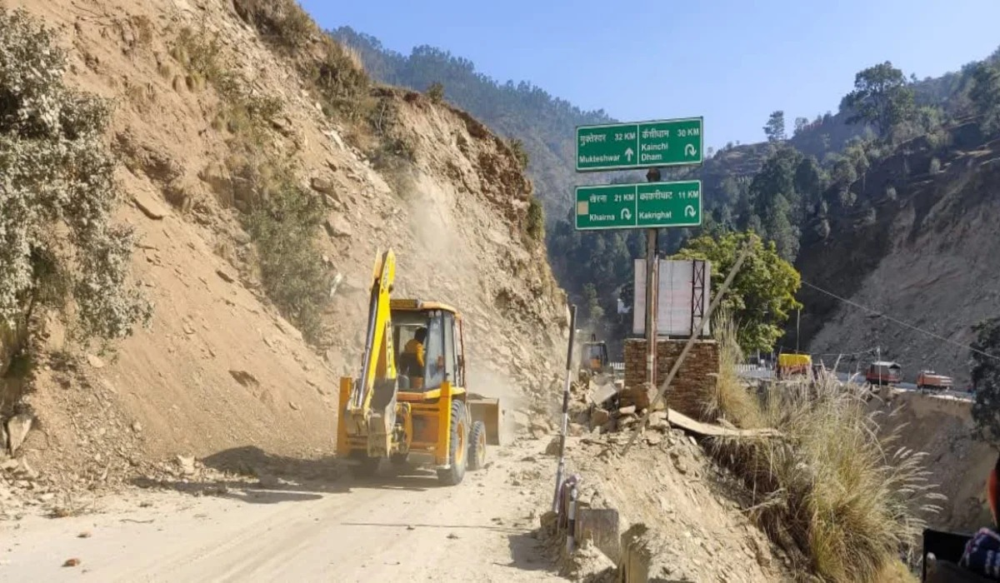
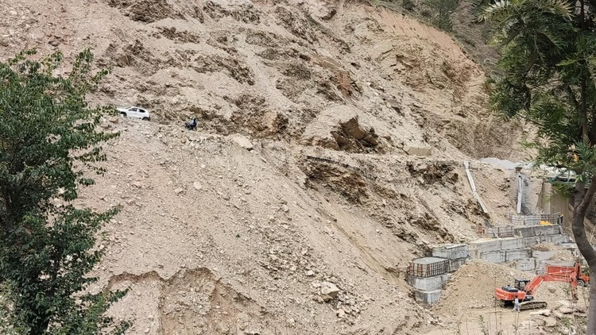
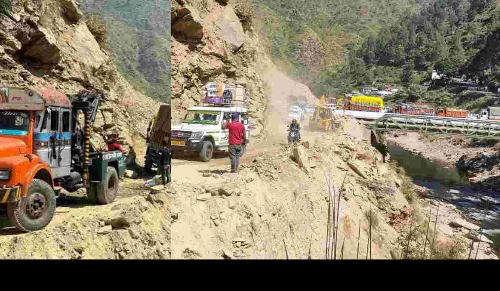

Smart Landslide Awareness & Disaster Management Portal
24°C
12 mm
18 km/h
HIGH
Kwarab, Almora
Loading...
Loading...
--
--
--
Safe Weather
Moderate Rain
Heavy Rain
Location : Kwarab Pool, Almora
Danger : Landslide, Falling Rocks, Road Blockage
Help us improve disaster response by reporting landslides, road blockages, heavy rainfall, falling rocks, floods, or any emergency situation in your area.
Share the exact location of the incident.
Upload photos of the affected area.
Help authorities identify dangerous locations.
Improve emergency response and public safety.
Follow these important safety guidelines to protect yourself and your family during heavy rainfall and landslides.
Check weather updates regularly and avoid travelling in landslide-prone areas during continuous rainfall.
Move away from hill slopes immediately. Never stop your vehicle near loose rocks or unstable ground.
Call Police (112), Ambulance (108), Fire (101), or SDRF immediately if someone is trapped or injured.
Keep water, medicines, flashlight, power bank, important documents, and first-aid supplies ready.
Avoid driving through blocked roads or areas with falling rocks. Wait for official clearance.
Always follow updates issued by IMD, SDRF, and the District Administration during emergencies.
In case of any emergency, immediately contact the following services.
Kwarab Pool is one of the most landslide-prone locations in Almora District, Uttarakhand. Heavy rainfall often causes landslides, falling rocks, and road closures in this region.

Place : Kwarab Pool, Almora, Uttarakhand
Coordinates : 29.60° N, 79.53° E
Altitude : Himalayan Region
HIGH RISK DURING HEAVY RAINFALL
The map below represents the approximate location of Kwarab Landslide Zone.
Real photographs of the Kwarab landslide-prone area in Almora, Uttarakhand. These images show road damage, falling rocks, and traffic disruption during heavy rainfall.
Heavy rainfall causes severe road damage near Kwarab Pool, making travel dangerous.

Continuous rainfall increases the possibility of landslides and road blockages.

Large rocks and loose soil frequently fall onto the highway during the monsoon season.

This photograph shows the landslide-prone area near Kwarab Pool in Almora, Uttarakhand. Heavy rainfall often causes road damage, falling rocks, and traffic disruptions in this region. Travellers are advised to remain alert during the monsoon season.
This website is created only for educational and awareness purposes. Always follow official alerts issued by IMD, SDRF, District Administration, and local authorities.